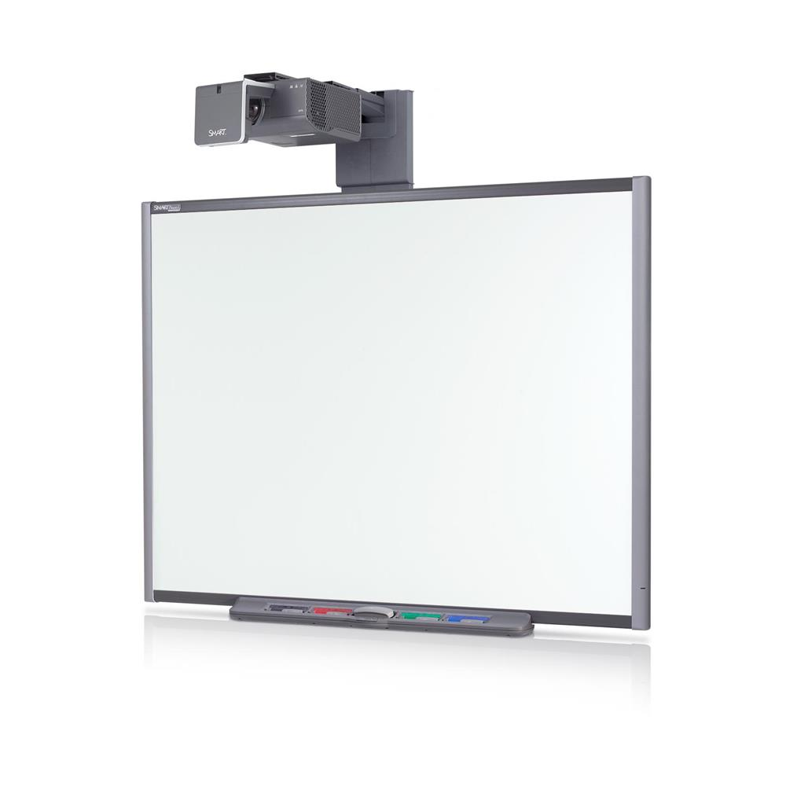
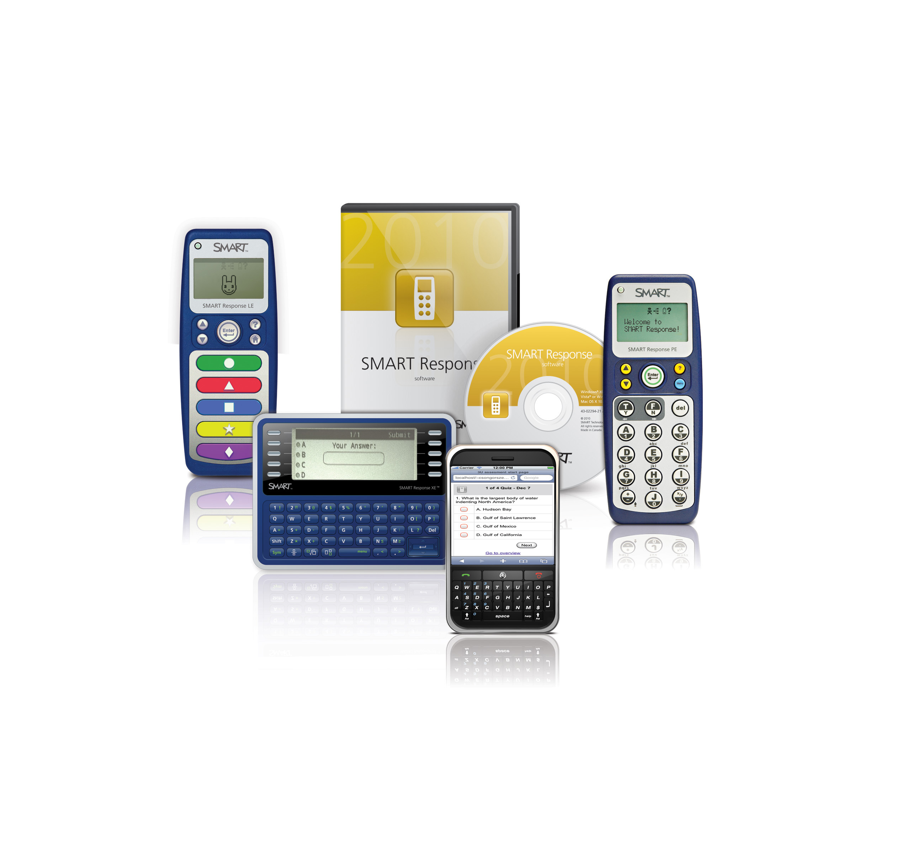

Interactive Technologies in the Classroom
For our presentation, nothing needs to be downloaded or created. Simply show
up ready to move!

As technology progresses, we as educators need to be on the front line in
terms of technology understanding and education. For our presentation we chose
to focus on interactive technologies. These were broken into four main categories.
SMART boards, and SMART technology were grouped into one category of their
own. They are primarily touch based technologies, and are incredibly important in
today's classroom. Participation technologies are those specifically designed for
group collaboration and feedback. These are useful in situations where students
may not feel as comfortable speaking out, or when immediate feedback is useful.
Aural and visual technologies are primarily focused in reading, and recording
technologies. Some are incredibly useful as we will discuss later. Motion
technology is the last, and represents technology where you can use motion controls
to interact directly with a piece of software. Some of these are used in classrooms
now, and some will be used more prominently in the future.
The SMART board interactive white board, which was
conceptualized in 1986 was later launched in 1991, and has since become integrated
in classrooms all over the world. SMART boards have been improved since 1991 and
have changed and now currently offer features that were unheard of in 1991.
The SMART board interactive white board was the first to provide touch control as
well as provide users with the ability to write over standard computer applications.
When connected to an LCD panel and a computer the SMART board interactive
white board
brought a new level of interactive technology to learning in the classroom.
Basically, SMART boards incorporated in the classroom allow you to make interaction
with your students easy. A previous study has shown that using a SMART board in the
classroom can also increase motivation of your students as it leads to active
participation.
Aural and visual technologies are incredibly important, and multiple studies have
proven that fact. Some examples of these technologies are,
- Word-Image Association
- Read Alongs
- Audio Books
- Dictation-Type Programs
- Language Learning Apps
- SMART Boards/Interactive

Research group IDC conducted a survey of over 250
educators and 98% believed that audio/visual technologies significantly increase
student
attention and participation rates. Visuals bring students into the learning process by
enabling them to participate interactively in a number of ways such as writing on an
interactive white board, or email/text messaging to respond to or ask a question in
class. Studies have found that the impact of audio and visual technologies on learning
were successful in promoting long term memory retention. This benefit is closely
linked to how these technologies can increase attention and participation in that
when a student is engaged in a lesson, the student will likely remember and retain the
information learned.
Participation software is a great educational resource for the classroom because it
allows the teachers to assess their students learning abilities and their ability
as a teacher to understand what parts of their lessons are working. New software for
smart phones is revolutionizing the way active participation can be done in class.
Having a Smart phone is very common as is supportive technology in the classroom such
as I pads, tablets, and laptops. These devices make it possible for active
participation from students in the audience during presentations. Software like
Socrative by Mastery Connect, Mobile Event Apps, and Poll Everywhere. This software
is evolving so that the technology of active participation can be available of any
device. However there is still a great deal of devices used in classrooms to gather
the same information often called clickers. Clickers are associated with Student
Response Technology or Audience response Technology. Like the Participation software
they allow the presenter to actively engage and collect data throughout their
presentation.
Motion Technology has been around for a long time. People have used it in movies,
security systems, and so much more. Considering interactive technology, motion
control really only falls in the realm of video games. The idea is that you would
use motion to receive an immediate response and interact with something. Gaming
consoles are the only ones who saw this as a useful thing. It is only now that people
are
realizing that motion controls could be useful not just in a gaming aspect, but as a
broad tool for technological interaction. The idea with interactive technology,
particularly surrounding motion technology, is kinesthetic learning. We all agree
that there needs to be more movement in schools. What if a lesson could be taught
and interacted with using motion control? Instead of sitting at a desk students
could interact with numbers and other material. The most common system for motion
control is the kinect for the Xbox. Recently the sales of this device have not been
good, and Microsoft launched an individual Kinect for windows. From this developers
and programmers have started to build programs for a use in a much broader context,
and some of those have been education. The prospect of the future technology in
education is exciting, and no doubt some incredible technologies will emerge.
Sources for images and information can be found below,
http://www.smartboards.com/resize/shared/images/products/smart/SMAR-SB680i6.jpg?lr=t&bw=1000&w=1000&bh=1000&h=1000
http://www.gteach.com/the-history-of-smart-board-technology.html
http://education.smarttech.com/en/products/notebook
http://www.slideshare.net/enshives/why-are-smart-boards-great-for-students
http://www.participate.co.za/products/student-response-systems/
http://www.Socreative.com/
http://www.polleverywhere.com/k12-student-response-system/? ref=PIW0qgbZ&gclid=CJCE7Pjexb8CFSxo7AodyH8AVA
https://commons.georgetown.edu/m/media/resources/ECAR_clicker_study.pdf
http://www.pcmag.com/article2/0,2817,2372058,00.asp
http://www.microsoft.com/en-us/kinectforwindows/